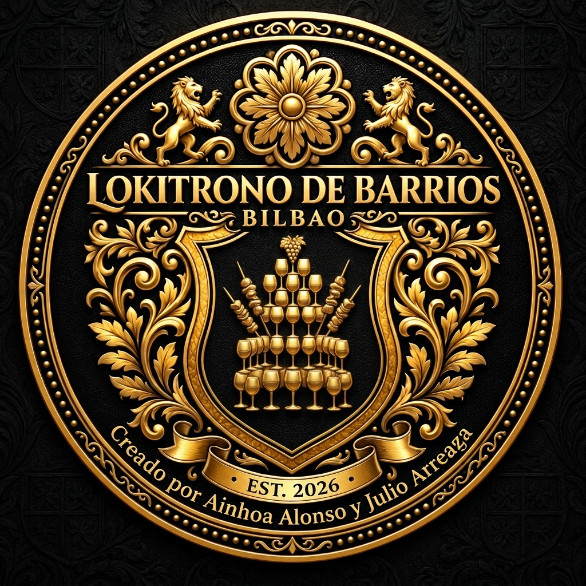

Elige tu aventurera/o
¿Quién eres?
Cada héroe tiene su propia historia en el Botxo.

LokiTrono de Barrios presenta
Botxitrono del Botxo
Elige tu héroe y cruza los 52 barrios de Bilbao. Corre, lucha, compra pintxos en la DENDA y alcanza el castillo.
0 monedas · 0 partidas
Manual de la heroína
Cómo jugar
- Muévete con ← → o los botones de flechas. Mantén pulsado para correr.
- Salta con Espacio, ↑ o SALTAR. Con el doble salto, pulsa otra vez en el aire.
- Ataca con X/J o el botón ⚔. Dispara con C/K o el botón 🏹; cambia de arma con Q.
- Dash con Shift o doble toque de dirección cuando lo tengas. El escudo bloquea proyectiles frontales.
- Recoge monedas y llega al castillo. En la DENDA, a mitad de nivel, compra pintxos, pociones y equipo; la primera visita cura todos los corazones.
- Tienes 3 corazones y puedes llegar a 6. Los abismos cuestan un corazón; cada nivel superado devuelve uno.
La aventura espera
En pausa
Fin de la aventura
Has caído
¡Nuevo récord!
Registra tu hazaña en el Trono:
Nivel superado
¡Castillo conquistado!
Descanso del camino
DENDA
Pintxos, pociones y equipo para seguir el camino.
Recorrido del Botxo
🗺️ Bilbao Medieval — Los 52 Barrios
Desde San Pedro de Deusto hasta Gurtubay.
Salón de la Fama
🏆 Puntuaciones del Botxo
● EN VIVOLas hazañas legendarias registradas a lo largo de los 52 barrios de Bilbao.
| # | Héroe / Aventurero | Nivel | 🪙 | Puntos |
|---|---|---|---|---|
| Cargando proezas... | ||||
LokiTrono de Barrios
Créditos de la Aventura
Aritza del Reino · Aventura por los 52 barrios de Bilbao.
Creadores y Diseñadores:
Julio Arteaga & Ainhoa Alonso
Heroína: Aritza de Bilbao
Mundo: Los 52 Barrios de la Villa de Bilbao
Música y Efectos: Audio sintético Web Audio API
Agradecimientos: Al Botxo, a su gente y a cada rincón de la Ría.